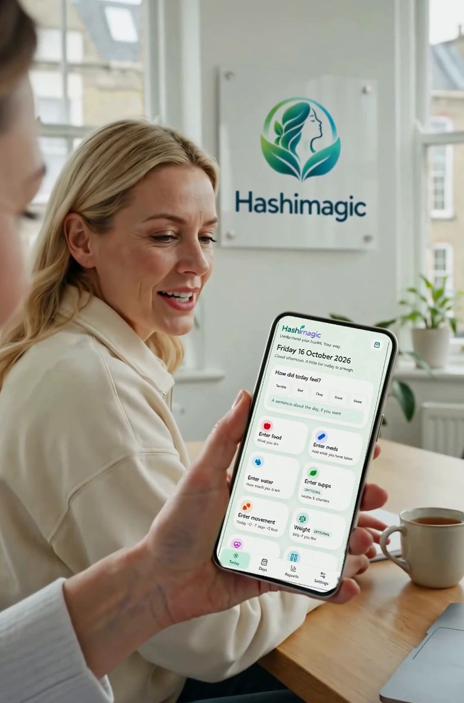

Understand your thyroid health. Your way.
Hashimagic is a phone-first app that helps people living with Hashimoto’s and other thyroid conditions keep a clear record of their everyday lives, bringing medication, supplements, diet, exercise, symptoms and weight together in one calm place.

Bridging the gap between “take your tablet” and “try everything”
We want to give people with Hashimoto’s or thyroid conditions a clearer, more complete picture of their own health: one that respects conventional medicine, takes lifestyle seriously, and weighs every piece of advice by the strength of its evidence.
Managing a thyroid condition is a daily juggling act
Living well with Hashimoto’s means keeping track of many moving parts, every single day, and noticing how they affect each other.
- Scattered information. Notes in one app, reminders in another, symptoms in your head.
- Hard-to-spot links. Was it the new supplement, the change in diet, or a poor week of sleep?
- Conflicting advice. Conventional guidance often stops at the prescription; alternative advice can be inconsistent and unevidenced.
The two sides rarely meet
Conventional care focuses on medication such as levothyroxine. Alternative sources focus on diet, nutrients and lifestyle. People are often left to piece the two together on their own.
One app. The whole picture.
Designed for your phone first, Hashimagic makes daily logging quick and gives you a clear record you can look back on.
Phone-first logging
Record medication, supplements, food, water, movement, weight and how the day felt in moments. Use on a computer may follow later.
Your record over time
See everything you log side by side, by day, week and month, so you can look back over what you did and how you felt.
Evidence-weighted information
A curated blend of medical and alternative sources, weighted by evidence: a peer-reviewed trial counts for more than a blog post. Built because too many people with Hashimoto’s are being let down by mainstream healthcare providers, so Hashimagic helps you track what the system doesn’t.